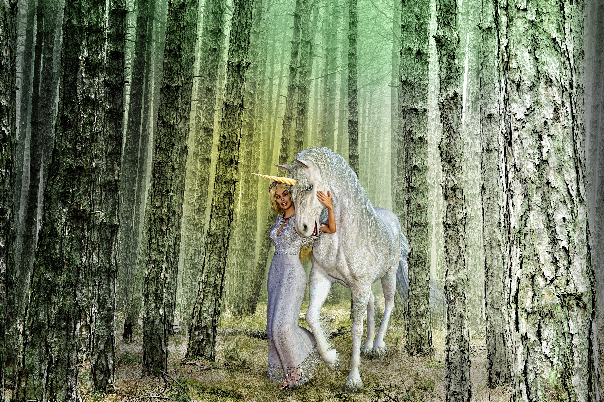

Primeros registros
El unicornio no nació en la mitología fantástica, sino como un intento de historia natural. Sus primeros registros escritos datan del siglo V a. C., cuando el médico griego Ctesias describió en su obra Indica a unos «asnos salvajes» de la India con un cuerno en la frente, dotado de propiedades curativas. Posteriormente, historiadores mezclaron relatos de viajeros sobre animales reales (como rinocerontes u órices) para consolidar su figura, la cual en la Edad Media terminó transformándose en un símbolo de pureza espiritual y magia.

Edad Media. Intervención de la religión
Durante la Edad Media, el Cristianismo reinterpreto completamente al unicornio a través de bestiarios y obras teológicas como el Physiologus. La Iglesia convirtió a la fiera indomable en una alegoría de Jesucristo, cuya Encarnación se simbolizaba mediante la célebre leyenda de que solo una mujer virgen podía amansarlo. Así, la caza del unicornio pasó a representar la Pasión de Cristo, donde la criatura apoyaba su cabeza en el regazo de la Virgen María para ser capturada y sacrificada por los cazadores.
Edad moderna. Secularización del mito
Durante la Edad Moderna, el avance de la observación científica y la anatomía comenzó a despojar al unicornio de su simbolismo religioso. Naturalistas como Conrad Gessner aún lo documentaban, pero el escepticismo fue en aumento a medida que los exploradores no lograban hallar ejemplares vivos y se revelaba que los «cuernos de unicornio» presentes en las cortes reales europeas eran, en realidad, simples colmillos de narval. Para el siglo XVIII, la Ilustración y la zoología moderna trasladaron definitivamente a esta criatura de los libros de historia natural al terreno del folclore y la ficción literaria.
Edad Contempoánea. Unicornio como fantasía
En la Edad Contemporánea, el unicornio pasó de los cuentos de faldas y la literatura fantástica a convertirse en un fenómeno masivo de la cultura pop. Asociado a la estética de los noventa (como My Little Pony) y a los colores pastel o arcoíris, adoptó una connotación de fantasía e inocencia kitsch. En el siglo XXI, el colectivo LGTBIQ+ lo abrazó como símbolo de orgullo, diversidad y singularidad. Hoy representa la autoexpresión liberadora, sirviendo tanto de ícono queer como de gran reclamo comercial global.